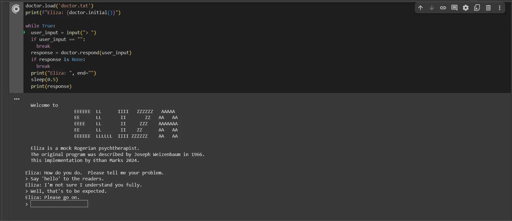

ELIZA was the first computer chatbot. Think of it as the great-great-great-grandparent of ChatGPT.

ELIZA running on an 1960 IBM 7094
ELIZA's source code was written by Joseph Weizenbaum in 1966 in the SLIP programming language, which is a fork of MAD. My computer obviously doesn't run a 66-year-old programming language written for the UNIVAC 1100/2200 series#1107.
I still wanted to test ELIZA as part of my research on early AI, so I was left no other choice but to re-implement ELIZA for modern computers in Python.
ELIZA running in Google Colab
If you'd be interested to see for yourself how far AI has come over the past half-century, feel free to check out my Colab notebook.
~Ethan